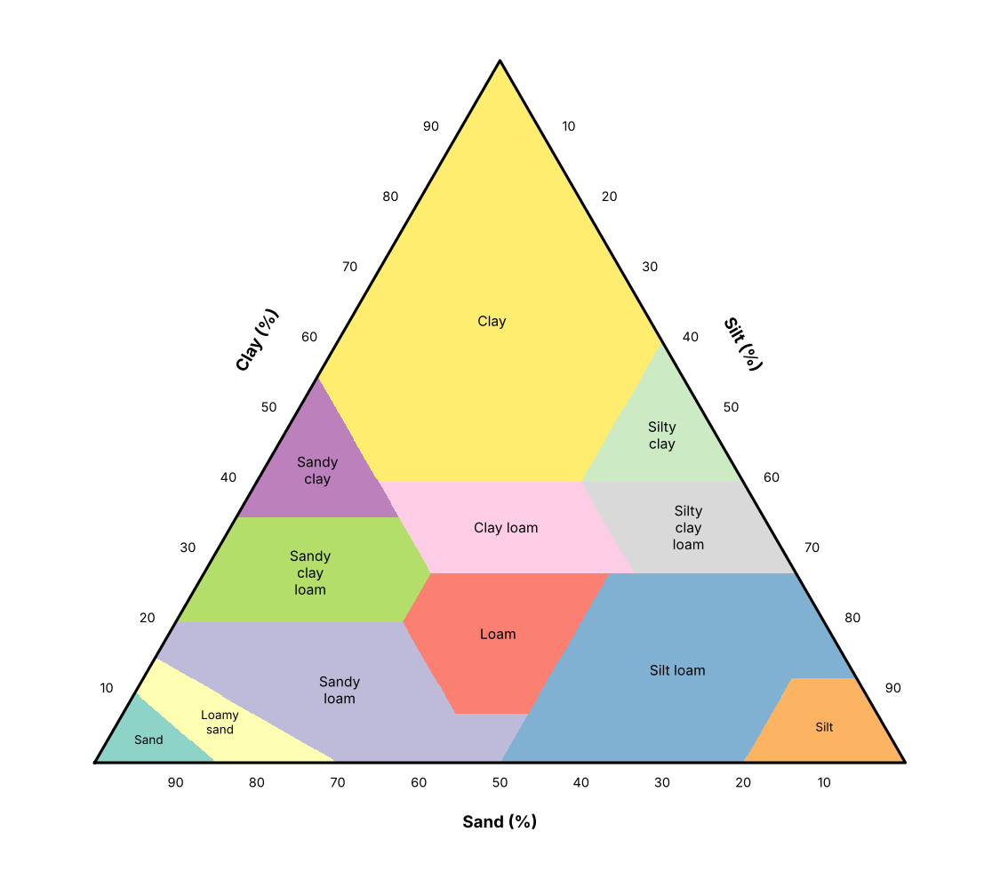
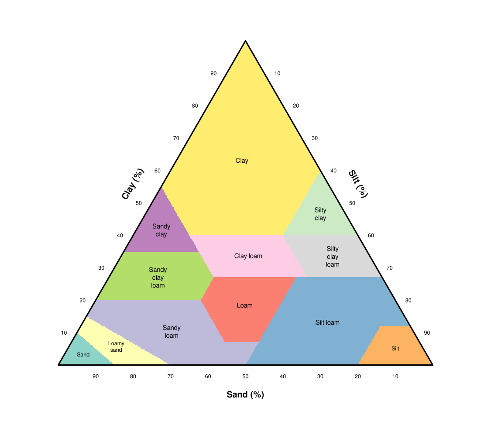
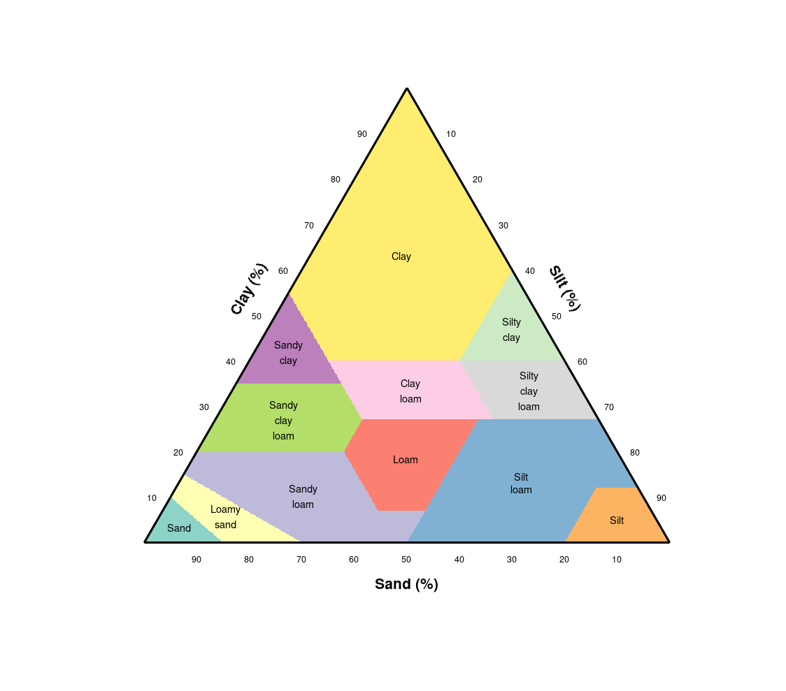

Chapter 7 · Soil Moisture and Infiltration
USDA soil texture triangle
USDA soil texture classes drawn on a sand-silt-clay triangle.
Source: Chapter 7 draft (Figure "Texture"); classes computed from the standard USDA texture-class rules (sand, silt, clay in % by weight)
No external data file: values are small and embedded in the code.

Code: soil_texture_triangle.py · image: figure_python.png

"""USDA soil texture triangle
Chapter 7 draft (Figure "Texture"); classes computed from the standard USDA texture-class rules (sand, silt, clay in % by weight)
Run: python3 soil_texture_triangle.py -> figure_python.png"""
import numpy as np, matplotlib
matplotlib.use("Agg"); import matplotlib.pyplot as plt
names = ["Sand", "Loamy sand", "Sandy loam", "Loam", "Silt loam", "Silt", "Sandy clay loam", "Clay loam", "Silty clay loam", "Sandy clay", "Silty clay", "Clay"]
def classify(sand, silt, clay):
"""USDA texture class index (0-11) from percent sand, silt, clay (rules as in the NRCS soil-texture calculator)."""
c = np.full(np.shape(sand), -1)
rules = [
(0, silt + 1.5 * clay < 15),
(1, (silt + 1.5 * clay >= 15) & (silt + 2 * clay < 30)),
(2, ((clay >= 7) & (clay < 20) & (sand > 52) & (silt + 2 * clay >= 30)) | ((clay < 7) & (silt < 50) & (silt + 2 * clay >= 30))),
(3, (clay >= 7) & (clay < 27) & (silt >= 28) & (silt < 50) & (sand <= 52)),
(4, ((silt >= 50) & (clay >= 12) & (clay < 27)) | ((silt >= 50) & (silt < 80) & (clay < 12))),
(5, (silt >= 80) & (clay < 12)),
(6, (clay >= 20) & (clay < 35) & (silt < 28) & (sand > 45)),
(7, (clay >= 27) & (clay < 40) & (sand > 20) & (sand <= 45)),
(8, (clay >= 27) & (clay < 40) & (sand <= 20)),
(9, (clay >= 35) & (sand > 45)),
(10, (clay >= 40) & (silt >= 40)),
(11, (clay >= 40) & (sand <= 45) & (silt < 40))]
for k, m in rules: c = np.where((c < 0) & m, k, c)
return c
# Triangle geometry: clay at the apex, sand at lower left, silt at lower right.
H = np.sqrt(3) / 2
xs, ys = np.meshgrid(np.linspace(0, 1, 900), np.linspace(0, H, 780))
clay = 100 * ys / H; silt = 100 * (xs - 0.5 * clay / 100); sand = 100 - clay - silt
inside = (clay >= 0) & (silt >= 0) & (sand >= 0)
cls = np.where(inside, classify(sand, silt, clay), np.nan)
fig, ax = plt.subplots(figsize=(7.5, 6.6))
ax.pcolormesh(xs, ys, cls, cmap=plt.get_cmap("Set3", 12), vmin=-0.5, vmax=11.5, shading="auto")
ax.plot([0, 1, 0.5, 0], [0, 0, H, 0], "k-", lw=1.5)
for k, n in enumerate(names):
m = cls == k
if m.any(): ax.text(xs[m].mean(), ys[m].mean(), n.replace(" ", "\n") if len(n) > 9 else n, ha="center", va="center", fontsize=7.5 if k not in (0, 1, 5) else 6.5)
for v in range(10, 100, 10): # edge tick labels
ax.text(0.5 * v / 100 - 0.035, H * v / 100, str(v), fontsize=7, ha="center") # clay, left edge
ax.text(1 - v / 100 + 0.0, -0.03, str(v), fontsize=7, ha="center") # sand, bottom edge (increases to the left)
ax.text(1 - 0.5 * v / 100 + 0.035, H * v / 100, str(100 - v), fontsize=7, ha="center") if False else ax.text(1 - 0.5 * (100 - v) / 100 + 0.035, H * (100 - v) / 100, str(v), fontsize=7, ha="center") # silt, right edge
ax.text(0.2, 0.5 * H + 0.05, "Clay (%)", rotation=60, ha="center", fontsize=9, fontweight="bold")
ax.text(0.5, -0.08, "Sand (%)", ha="center", fontsize=9, fontweight="bold")
ax.text(0.8, 0.5 * H + 0.05, "Silt (%)", rotation=-60, ha="center", fontsize=9, fontweight="bold")
ax.set_aspect("equal"); ax.axis("off"); ax.set_xlim(-0.08, 1.08); ax.set_ylim(-0.12, H + 0.05)
fig.tight_layout(); fig.savefig("figure_python.png", dpi=150)

Code: soil_texture_triangle.R · image: figure_r.png

# USDA soil texture triangle
# Chapter 7 draft (Figure "Texture"); classes computed from the standard USDA texture-class rules (sand, silt, clay in % by weight)
# Run: Rscript soil_texture_triangle.R -> figure_r.png (base R, no packages)
nm <- c("Sand", "Loamy sand", "Sandy loam", "Loam", "Silt loam", "Silt", "Sandy clay loam", "Clay loam", "Silty clay loam", "Sandy clay", "Silty clay", "Clay")
classify <- function(sand, silt, clay) { # USDA texture class index (1-12) from percent sand, silt, clay
cl <- rep(NA_integer_, length(sand))
rules <- list(
silt + 1.5 * clay < 15,
silt + 1.5 * clay >= 15 & silt + 2 * clay < 30,
(clay >= 7 & clay < 20 & sand > 52 & silt + 2 * clay >= 30) | (clay < 7 & silt < 50 & silt + 2 * clay >= 30),
clay >= 7 & clay < 27 & silt >= 28 & silt < 50 & sand <= 52,
(silt >= 50 & clay >= 12 & clay < 27) | (silt >= 50 & silt < 80 & clay < 12),
silt >= 80 & clay < 12,
clay >= 20 & clay < 35 & silt < 28 & sand > 45,
clay >= 27 & clay < 40 & sand > 20 & sand <= 45,
clay >= 27 & clay < 40 & sand <= 20,
clay >= 35 & sand > 45,
clay >= 40 & silt >= 40,
clay >= 40 & sand <= 45 & silt < 40)
for (k in seq_along(rules)) cl[is.na(cl) & rules[[k]]] <- k
cl
}
H <- sqrt(3) / 2
gx <- seq(0, 1, length.out = 600); gy <- seq(0, H, length.out = 520)
g <- expand.grid(x = gx, y = gy)
clay <- 100 * g$y / H; silt <- 100 * (g$x - 0.5 * clay / 100); sand <- 100 - clay - silt
ins <- clay >= 0 & silt >= 0 & sand >= 0
cls <- rep(NA_integer_, nrow(g)); cls[ins] <- classify(sand[ins], silt[ins], clay[ins])
cols <- c("#8dd3c7", "#ffffb3", "#bebada", "#fb8072", "#80b1d3", "#fdb462", "#b3de69", "#fccde5", "#d9d9d9", "#bc80bd", "#ccebc5", "#ffed6f")
png("figure_r.png", width = 1125, height = 990, res = 150); par(mar = c(0.5, 0.5, 0.5, 0.5))
plot(NA, xlim = c(-0.08, 1.08), ylim = c(-0.12, H + 0.05), asp = 1, axes = FALSE, xlab = "", ylab = "")
image(gx, gy, matrix(cls, nrow = length(gx)), col = cols, breaks = 0.5:12.5, add = TRUE)
lines(c(0, 1, 0.5, 0), c(0, 0, H, 0), lwd = 2)
for (k in 1:12) { mm <- which(cls == k); if (length(mm)) text(mean(g$x[mm]), mean(g$y[mm]), if (nchar(nm[k]) > 9) gsub(" ", "\n", nm[k]) else nm[k], cex = if (k %in% c(1, 2, 6)) 0.5 else 0.6) }
for (v in seq(10, 90, 10)) {
text(0.5 * v / 100 - 0.035, H * v / 100, v, cex = 0.5); text(1 - v / 100, -0.03, v, cex = 0.5)
text(1 - 0.5 * (100 - v) / 100 + 0.035, H * (100 - v) / 100, v, cex = 0.5)
}
text(0.2, 0.5 * H + 0.05, "Clay (%)", srt = 60, font = 2, cex = 0.8); text(0.5, -0.08, "Sand (%)", font = 2, cex = 0.8); text(0.8, 0.5 * H + 0.05, "Silt (%)", srt = -60, font = 2, cex = 0.8)
invisible(dev.off())

Code: soil_texture_triangle.m · image: figure_matlab.png

% USDA soil texture triangle
% Chapter 7 draft (Figure "Texture"); classes computed from the standard USDA texture-class rules (sand, silt, clay in % by weight)
% Run: run soil_texture_triangle.m -> figure_matlab.png (MATLAB or GNU Octave)
clear; close all;
nm = {'Sand', 'Loamy sand', 'Sandy loam', 'Loam', 'Silt loam', 'Silt', 'Sandy clay loam', 'Clay loam', 'Silty clay loam', 'Sandy clay', 'Silty clay', 'Clay'};
H = sqrt(3) / 2;
[xs, ys] = meshgrid(linspace(0, 1, 600), linspace(0, H, 520));
clay = 100 * ys / H; silt = 100 * (xs - 0.5 * clay / 100); sand = 100 - clay - silt;
inside = clay >= 0 & silt >= 0 & sand >= 0;
rules = cell(1, 12);
rules{1} = silt + 1.5 * clay < 15;
rules{2} = silt + 1.5 * clay >= 15 & silt + 2 * clay < 30;
rules{3} = (clay >= 7 & clay < 20 & sand > 52 & silt + 2 * clay >= 30) | (clay < 7 & silt < 50 & silt + 2 * clay >= 30);
rules{4} = clay >= 7 & clay < 27 & silt >= 28 & silt < 50 & sand <= 52;
rules{5} = (silt >= 50 & clay >= 12 & clay < 27) | (silt >= 50 & silt < 80 & clay < 12);
rules{6} = silt >= 80 & clay < 12;
rules{7} = clay >= 20 & clay < 35 & silt < 28 & sand > 45;
rules{8} = clay >= 27 & clay < 40 & sand > 20 & sand <= 45;
rules{9} = clay >= 27 & clay < 40 & sand <= 20;
rules{10} = clay >= 35 & sand > 45;
rules{11} = clay >= 40 & silt >= 40;
rules{12} = clay >= 40 & sand <= 45 & silt < 40;
cls = nan(size(xs));
for k = 1:12, cls(isnan(cls) & rules{k} & inside) = k; end
cols = [0.553 0.827 0.78; 1 1 0.702; 0.745 0.729 0.855; 0.984 0.502 0.447; 0.502 0.694 0.827; 0.992 0.706 0.384; 0.702 0.871 0.412; 0.988 0.804 0.898; 0.851 0.851 0.851; 0.737 0.502 0.741; 0.8 0.922 0.773; 1 0.929 0.435];
figure('Visible', 'off', 'Position', [100 100 750 660], 'Color', 'w'); hold on;
rgb = ones([size(cls) 3]);
for k = 1:12, mk = cls == k; for c = 1:3, tmp = rgb(:,:,c); tmp(mk) = cols(k, c); rgb(:,:,c) = tmp; end, end
image([0 1], [0 H], rgb); set(gca, 'YDir', 'normal');
plot([0 1 0.5 0], [0 0 H 0], 'k-', 'LineWidth', 1.5);
for k = 1:12
mk = cls == k; if any(mk(:)), text(mean(xs(mk)), mean(ys(mk)), strrep(nm{k}, ' ', char(10)), 'HorizontalAlignment', 'center', 'FontSize', 7); end
end
for v = 10:10:90
text(0.5 * v / 100 - 0.035, H * v / 100, num2str(v), 'FontSize', 6, 'HorizontalAlignment', 'center');
text(1 - v / 100, -0.03, num2str(v), 'FontSize', 6, 'HorizontalAlignment', 'center');
text(1 - 0.5 * (100 - v) / 100 + 0.035, H * (100 - v) / 100, num2str(v), 'FontSize', 6, 'HorizontalAlignment', 'center');
end
text(0.2, 0.5 * H + 0.05, 'Clay (%)', 'Rotation', 60, 'FontWeight', 'bold', 'HorizontalAlignment', 'center');
text(0.5, -0.08, 'Sand (%)', 'FontWeight', 'bold', 'HorizontalAlignment', 'center');
text(0.8, 0.5 * H + 0.05, 'Silt (%)', 'Rotation', -60, 'FontWeight', 'bold', 'HorizontalAlignment', 'center');
axis equal off; xlim([-0.08 1.08]); ylim([-0.12 H + 0.05]);
print('-dpng', '-r150', 'figure_matlab.png');